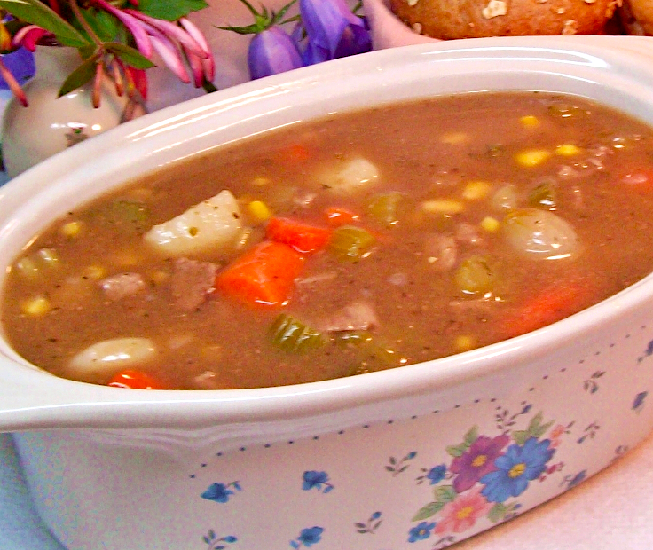

Beef Stew

Description
Frozen stew vegetables and canned beef broth are perfect for whipping up everyone's favorite comfort food, beef stew.
Ingredients
- 12 ounces lean stew beef
- 4 teaspoons olive oil
- 1 pound frozen stew vegetables
- 2 cups water
- 2 tablespoons red wine vinegar
- 2 cups beef broth
- 1/4 cup cornstarch
- 1/4 cup frozen corn
- 1 dash pepper
- 1 dash oregano
- 4 dinner rolls
Steps
- Brown beef in olive oil in a skillet over medium heat. Stir often.
- Pour water and red wine vinegar into the skillet, stir until pan drippings have loosened from the pan. Transfer to a saucepan.
- Add frozen vegetables to saucepan and turn heat on to medium.
- Dissolve cornstarch in beef broth and add to pan. Stir in frozen corn, pepper and oregano. Turn heat up to medium-high and heat until boiling, stirring constantly.
- Cover and turn heat to low. Simmer for 20 to 40 minutes or until meat and vegetables are tender. Serve with dinner rolls.